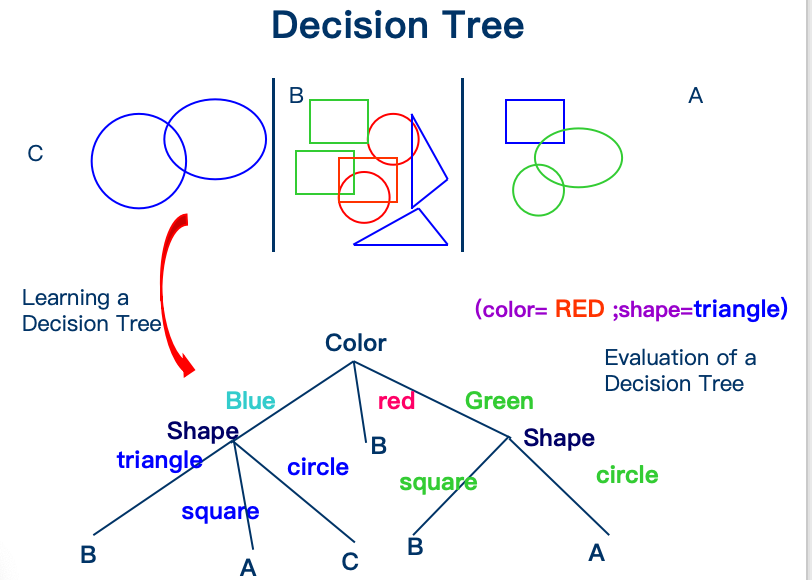
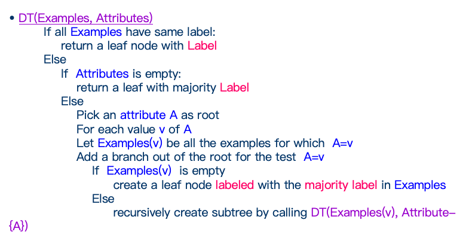
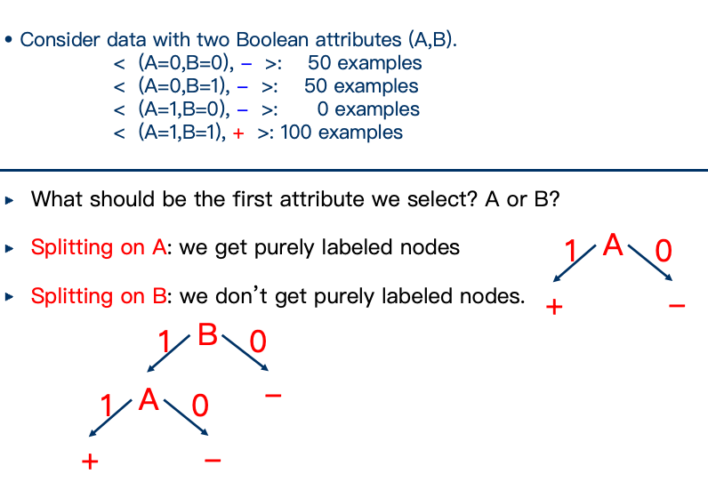
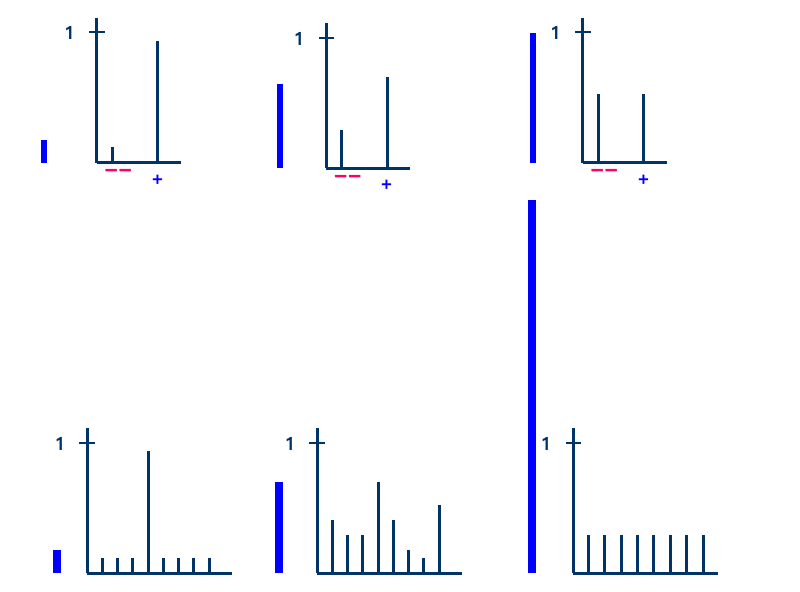
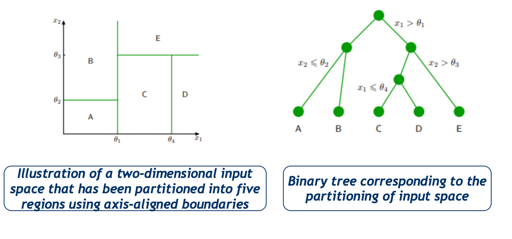
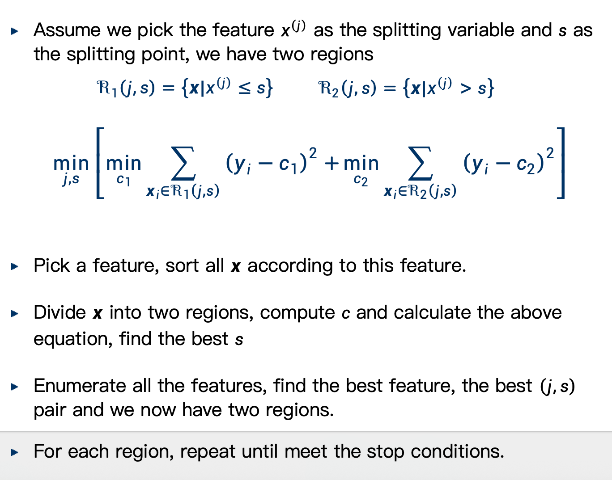
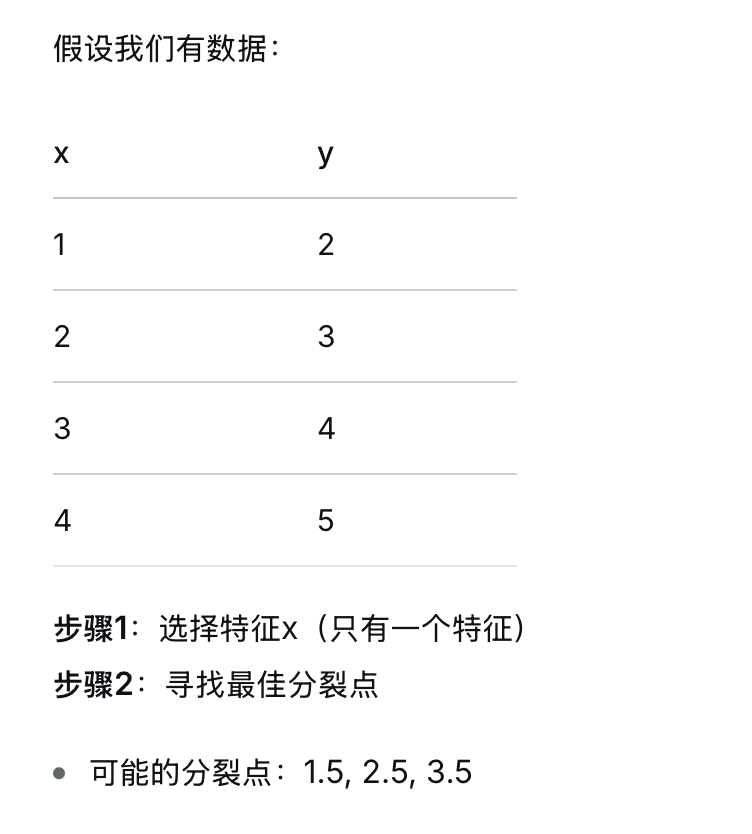
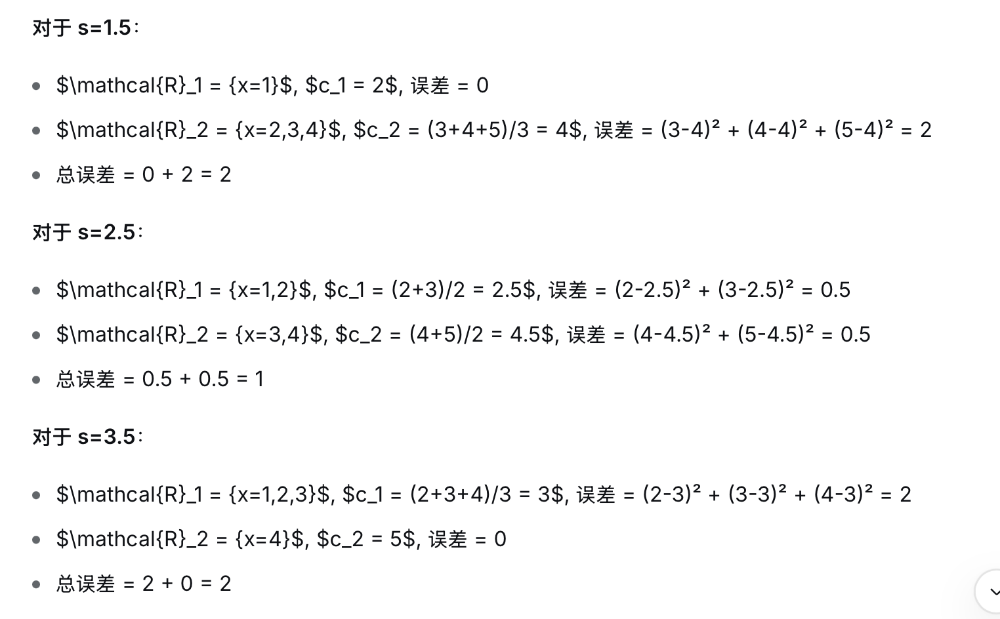
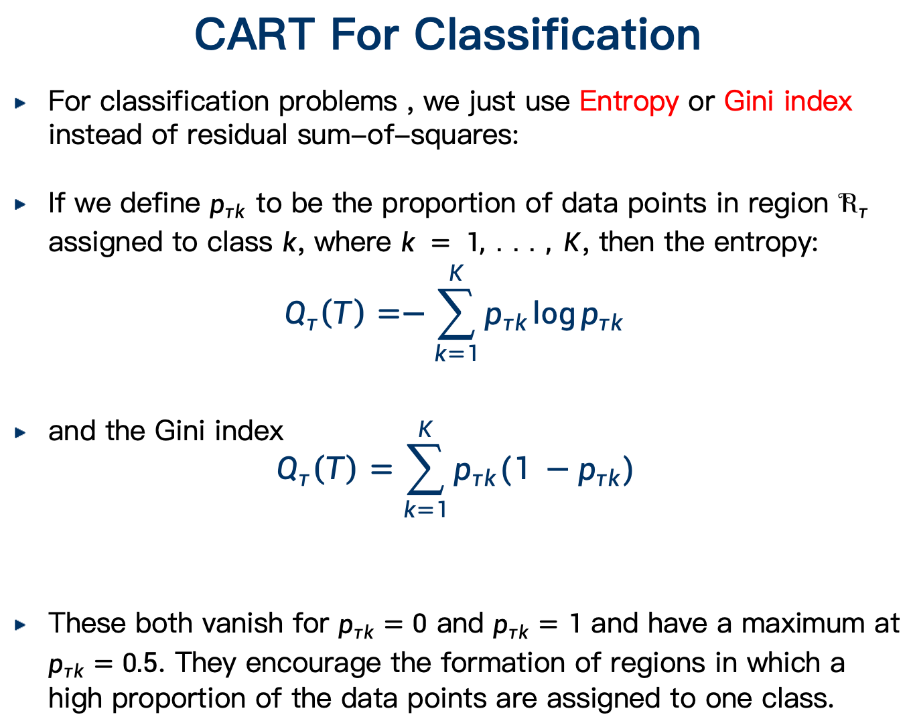

Lesson6 Decision Tree
Decision Tree

There are methods for handling noisy data (classification noise and attribute noise) and for handling missing attribute values.

- 找到与数据一致的最小决策树是 NP-hard 问题
- 递归算法的本质：贪心启发式（即每步都采用局部最优的，不考虑对后续与全局的影响）
- 该算法中的主要决策是选择下一个要基于其进行划分的属性
小树是对的：

我们选择A，因为它能一次就区分出两类最纯的数据。
Entropy
\(Entropy(S) = -P_+logP_+ - P_{-} logP_-\)
- where \(P_+\) is the proportion of positive examples in S
-
\(P_−\) is the proportion of negative examples
-
对半分的熵是 1
- 仅属于一类的熵是 0
如果不只有两个类别，熵为：\(Entropy(S) = -\sum P_i logP_i\)
为了对样本的类别标签进行编码，平均所需的最小比特数，例如，如果正例概率为 0.5，则每个样本平均需要 1 比特；如果概率为 0.8，则可以使用少于 1 比特（通过优化编码实现）。

We can pick the feature that the resulting data partitions have low entropy
Information Gain
\(Gain(S,a)=Entropy(S)−∑_{v∈values(a)} \frac{|S_v|}{|S|}Entropy(S_v)\)
- where \(S_v\) is the subset of S for which attribute a has value v
Partitions of low entropy lead to high gain
Classification and Regression Trees (CART)
ID3:
- 仅支持分类任务，不支持回归任务
- 只能处理离散属性

整体预测公式：$f(x)=∑_{i=1}^M c_τ I(x∈ℛ_τ) $
- \(I\)是指示函数，属于此区域为1，不属于为0
最优区域预测值: $c_τ=\frac{1}{N_τ}∑_{x_i∈ℛ_τ} y_i $
区域内的误差度量：
$Q_τ(T)=∑_{x_i∈ℛ_τ} (y_i−c_τ)^2 $
假设我们选择特征 \(x^{(j)}\) 作为分裂变量，\(s\) 作为分裂点，则定义两个区域：
\(\mathcal{R}_1(j,s) = {x \mid x^{(j)} \leq s}\) \(\mathcal{R}_2(j,s) = {x \mid x^{(j)} > s}\)
\(c_1 = \frac{1}{|\mathcal{R}1|} \sum{x_i \in \mathcal{R}_1} y_i\)（左区域的平均值） \(c_2 = \frac{1}{|\mathcal{R}2|} \sum{x_i \in \mathcal{R}_2} y_i\)（右区域的平均值）

所以这一逻辑集中于两个点，"选择什么特征"，"对于选择的特征，选择哪个"。


like this，可惜只有一个特征，所以只能直接选择，不过如何计算这应该说的很清楚了。
对于多个特征，比如分成两半，那么下一个特征点是分别决定的，意思是，两个区域分别决定自己的下一个特征点。
When to Stop?
一个可能的解决方案是：当残差误差的减少量低于某个阈值时，就停止分裂。
然而，经验研究发现，经常会出现以下情况：
- 在当前节点，所有可用的分裂都无法显著地减少误差
- 但在继续进行了几次分裂之后，却发现了一个能大幅降低误差的分裂
How to prune? 如何剪枝
he pruning is based on a criterion that balances residual error against a measure of model complexity.
\(C(T)=\sum_{T=1}^{|T|} Q_τ(T)+λ|T|\)
正则化参数 λ 决定了整体残差平方和误差与由叶节点数 |T| 度量的模型复杂度之间的权衡，其值通过交叉验证选择。
CART For Classification
